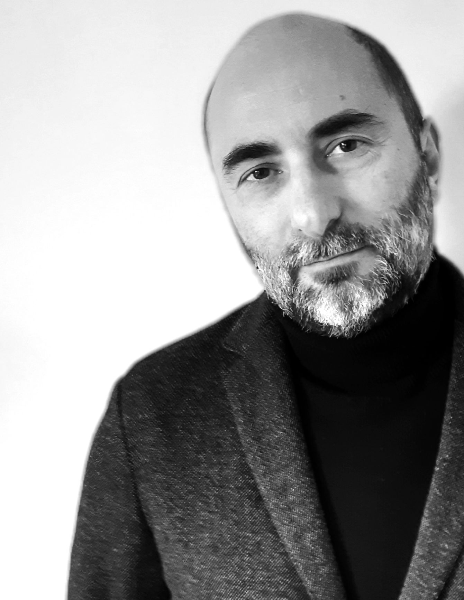
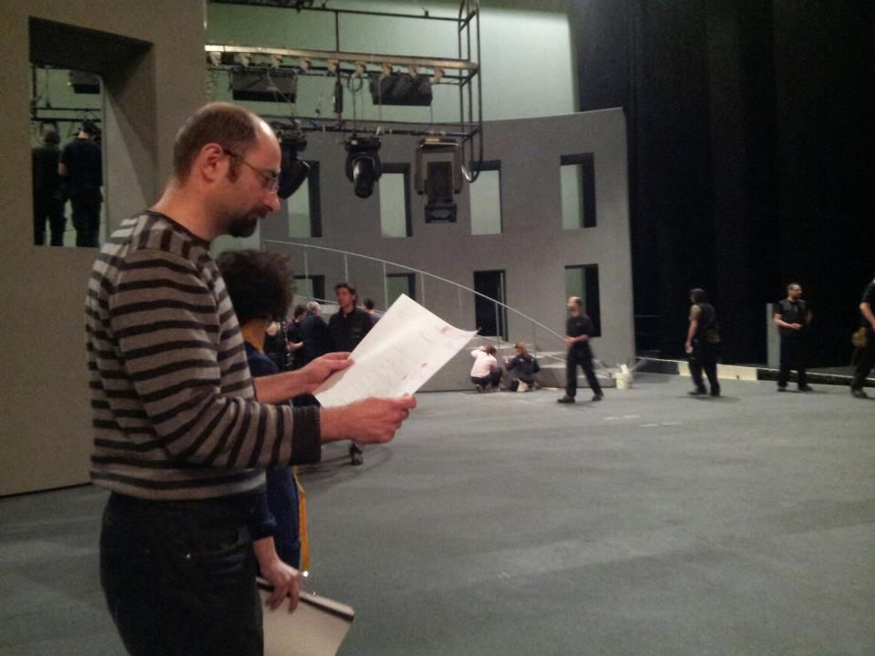

About

Cristian Taraborrelli is an eclectic artist capable of transforming every stage into a place of magic and innovation. Born in Rome in 1970, his career spans an extraordinary variety of artistic forms, from grand opera houses to multimedia installations, from theatrical scenography to urban regeneration projects. His practice of immersive scenography and spatial storytelling — blending visual art with cutting-edge technologies — makes him a unique figure in contemporary experiential design.
Cristian Taraborrelli è un artista eclettico capace di trasformare ogni palcoscenico in un luogo di magia e innovazione. Nato a Roma nel 1970, la sua carriera abbraccia una straordinaria varietà di forme artistiche, dai grandi teatri d’opera alle installazioni multimediali, dalla scenografia teatrale ai progetti di rigenerazione urbana. La sua pratica di scenografia immersiva e narrazione spaziale — che fonde arte visiva e tecnologie all’avanguardia — lo rende una figura unica nel panorama del design esperienziale contemporaneo.
Cristian Taraborrelli est un artiste éclectique capable de transformer chaque scène en un lieu de magie et d’innovation. Né à Rome en 1970, sa carrière couvre une extraordinaire variété de formes artistiques, des grands théâtres d’opéra aux installations multimédias, de la scénographie théâtrale aux projets de régénération urbaine. Sa pratique de la scénographie immersive et de la narration spatiale — mêlant art visuel et technologies de pointe — fait de lui une figure unique dans le paysage du design expérientiel contemporain.
Early Career
From the beginning of his career, Taraborrelli demonstrated a natural inclination for experimentation and innovation. In the early 1990s, his collaborations with Giorgio Barberio Corsetti involved him in experimental theater projects, contributing with scenography and costumes that challenged traditional conventions. His work “Il processo di Kafka,” which earned him the Ubu Prize in 1999, marked one of the early recognitions of his talent.
Fin dagli inizi della sua carriera, Taraborrelli ha dimostrato una naturale inclinazione per la sperimentazione e l’innovazione. Nei primi anni Novanta, le sue collaborazioni con Giorgio Barberio Corsetti lo hanno coinvolto in progetti di teatro sperimentale, contribuendo con scenografie e costumi che sfidavano le convenzioni tradizionali. Il suo lavoro per “Il processo di Kafka”, che gli è valso il Premio Ubu nel 1999, ha segnato uno dei primi riconoscimenti del suo talento.
Dès le début de sa carrière, Taraborrelli a démontré une inclination naturelle pour l’expérimentation et l’innovation. Au début des années 1990, ses collaborations avec Giorgio Barberio Corsetti l’ont impliqué dans des projets de théâtre expérimental, contribuant avec des décors et costumes qui défiaient les conventions traditionnelles. Son travail pour « Il processo di Kafka », qui lui a valu le Prix Ubu en 1999, a marqué l’une des premières reconnaissances de son talent.
Awards & Recognition
His career is marked with awards and accolades, showcasing his ongoing pursuit of artistic perfection. In 2006, he received the Franco Abbiati Prize from the Italian Music Critics’ Association, and in 2009, he won the Prix du Syndicat de la Critique for best scenography for Howard Barker’s “Gertrude (le Cri)” in France, a work also nominated for the prestigious Molière Prize.
La sua carriera è costellata di premi e riconoscimenti che testimoniano la sua costante ricerca della perfezione artistica. Nel 2006 ha ricevuto il Premio Franco Abbiati dall’Associazione Nazionale Critici Musicali, e nel 2009 ha vinto il Prix du Syndicat de la Critique per la migliore scenografia per “Gertrude (le Cri)” di Howard Barker in Francia, opera anche candidata al prestigioso Premio Molière.
Sa carrière est jalonnée de prix et distinctions, témoignant de sa quête constante de perfection artistique. En 2006, il a reçu le Prix Franco Abbiati de l’Association Nationale des Critiques Musicaux italiens, et en 2009, il a remporté le Prix du Syndicat de la Critique pour la meilleure scénographie pour « Gertrude (le Cri) » de Howard Barker en France, œuvre également nommée au prestigieux Prix Molière.
Opera & Direction

Cristian Taraborrelli sul palco del Teatro alla Scala, Milano — Macbeth
It is in the field of opera that Taraborrelli best expresses his artistic vision. His directorial debut at the Pergolesi–Spontini Festival in Jesi in 2003 with “Lalla Rukh ovvero Guancia di tulipano” was a statement of intent: to merge opera tradition with new technologies. This vision further materialized in 2012 with the Intercoiffure event at Cinecittà, where video mapping merged with a live soprano performance, creating an unprecedented visual and auditory experience.
2014 marked another turning point with “Avanti, Striding Forward,” a multidisciplinary show celebrating Italy and its arts through innovative use of technology. In 2015, with his direction of Gavino Gabriel’s “La Jura,” Taraborrelli once again demonstrated his ability to revive rare and unpublished compositions, blending history with modernity. His direction of Lucio Gregoretti’s “Il colore del sole” in 2017 at the Teatro Comunale Luciano Pavarotti in Modena is a brilliant example of contemporary art dialoguing with literary and musical traditions.
È nel campo dell’opera lirica che Taraborrelli esprime al meglio la sua visione artistica. Il suo debutto alla regia al Festival Pergolesi–Spontini di Jesi nel 2003 con “Lalla Rukh ovvero Guancia di tulipano” fu una dichiarazione d’intenti: fondere la tradizione operistica con le nuove tecnologie. Questa visione si è ulteriormente concretizzata nel 2012 con l’evento Intercoiffure a Cinecittà, dove il videomapping si è fuso con un’esibizione dal vivo di un soprano, creando un’esperienza visiva e uditiva senza precedenti.
Il 2014 ha segnato un’altra svolta con “Avanti, Striding Forward”, uno spettacolo multidisciplinare che celebrava l’Italia e le sue arti attraverso un uso innovativo della tecnologia. Nel 2015, con la regia de “La Jura” di Gavino Gabriel, Taraborrelli ha dimostrato ancora una volta la sua capacità di far rivivere composizioni rare e inedite, fondendo storia e modernità. La sua regia de “Il colore del sole” di Lucio Gregoretti nel 2017 al Teatro Comunale Luciano Pavarotti di Modena è un brillante esempio di arte contemporanea in dialogo con le tradizioni letterarie e musicali.
C’est dans le domaine de l’opéra que Taraborrelli exprime le mieux sa vision artistique. Ses débuts en tant que metteur en scène au Festival Pergolesi–Spontini de Jesi en 2003 avec « Lalla Rukh ovvero Guancia di tulipano » furent une déclaration d’intention : fusionner la tradition opératique avec les nouvelles technologies. Cette vision s’est concrétisée en 2012 avec l’événement Intercoiffure à Cinecittà, où le vidéomapping a fusionné avec une performance de soprano en direct, créant une expérience visuelle et auditive sans précédent.
2014 a marqué un nouveau tournant avec « Avanti, Striding Forward », un spectacle multidisciplinaire célébrant l’Italie et ses arts à travers une utilisation innovante de la technologie. En 2015, avec sa mise en scène de « La Jura » de Gavino Gabriel, Taraborrelli a une fois de plus démontré sa capacité à faire revivre des compositions rares et inédites, mêlant histoire et modernité. Sa mise en scène de « Il colore del sole » de Lucio Gregoretti en 2017 au Teatro Comunale Luciano Pavarotti de Modène est un brillant exemple d’art contemporain dialoguant avec les traditions littéraires et musicales.
Innovation & Augmented Reality
His direction and scenography for “Pagliacci” at the Teatro Carlo Felice in Genoa represent the pinnacle of his career, introducing augmented reality into opera for the first time. This innovative approach not only expands the boundaries of theatrical experience but also opens new possibilities for the future of opera.
La sua regia e scenografia per “Pagliacci” al Teatro Carlo Felice di Genova rappresentano il culmine della sua carriera, introducendo per la prima volta la realtà aumentata nell’opera lirica. Questo approccio innovativo non solo espande i confini dell’esperienza teatrale, ma apre anche nuove possibilità per il futuro dell’opera.
Sa mise en scène et ses décors pour « Pagliacci » au Teatro Carlo Felice de Gênes représentent le sommet de sa carrière, introduisant pour la première fois la réalité augmentée dans l’opéra. Cette approche innovante non seulement repousse les limites de l’expérience théâtrale, mais ouvre également de nouvelles possibilités pour l’avenir de l’opéra.
Beyond the Stage
Equally significant is Taraborrelli’s contribution outside of theater and opera. His regeneration project for the Genoa Aquarium in 2016, awarded the Bea Award for best educational event, and the inauguration of the museum “La Città dei Bambini e dei Ragazzi” in Genoa in 2022, testify to his ability to apply his artistic skills to educational and cultural contexts, creating spaces that stimulate curiosity and learning through sensory interaction.
Altrettanto significativo è il contributo di Taraborrelli al di fuori del teatro e dell’opera. Il suo progetto di rigenerazione per l’Acquario di Genova nel 2016, premiato con il Bea Award per il miglior evento educativo, e l’inaugurazione del museo “La Città dei Bambini e dei Ragazzi” a Genova nel 2022, testimoniano la sua capacità di applicare le sue competenze artistiche a contesti educativi e culturali, creando spazi che stimolano la curiosità e l’apprendimento attraverso l’interazione sensoriale.
Tout aussi significative est la contribution de Taraborrelli en dehors du théâtre et de l’opéra. Son projet de régénération pour l’Aquarium de Gênes en 2016, récompensé par le Bea Award du meilleur événement éducatif, et l’inauguration du musée « La Città dei Bambini e dei Ragazzi » à Gênes en 2022, témoignent de sa capacité à appliquer ses compétences artistiques à des contextes éducatifs et culturels, créant des espaces qui stimulent la curiosité et l’apprentissage à travers l’interaction sensorielle.
Cristian Taraborrelli is a master of stage art and technology, capable of turning every project into a complete work of art. His ability to blend tradition and innovation, create immersive experiences, and work on an international level make him a prominent figure in the contemporary artistic panorama, a true innovator of our time.
Cristian Taraborrelli è un maestro dell’arte scenica e della tecnologia, capace di trasformare ogni progetto in un’opera d’arte completa. La sua capacità di fondere tradizione e innovazione, creare esperienze immersive e lavorare a livello internazionale lo rendono una figura di primo piano nel panorama artistico contemporaneo, un vero innovatore del nostro tempo.
Cristian Taraborrelli est un maître de l’art scénique et de la technologie, capable de transformer chaque projet en une œuvre d’art complète. Sa capacité à mêler tradition et innovation, à créer des expériences immersives et à travailler à l’échelle internationale font de lui une figure de premier plan dans le panorama artistique contemporain, un véritable innovateur de notre temps.
International Publications
2017
The Scenographer — Theatrical Notebooks
Numero monografico interamente dedicato al lavoro di Cristian Taraborrelli, pubblicato da SCSA London. Il saggio critico di Bruno Di Marino, “Scene Analogiche e Visioni Digitali”, analizza l’intero percorso artistico attraverso quattro direttrici: il doppio ruolo di scenografo-regista, la macchina scenica analogica, l’integrazione delle tecnologie digitali e la poetica dell’apparato visibile.
“Lo spazio scenico è vivo”
— Cristian Taraborrelli
A monographic issue entirely dedicated to Cristian Taraborrelli’s work, published by SCSA London. The critical essay by Bruno Di Marino, “Analog Sets and Digital Visions”, analyses the entire artistic trajectory through four dimensions: the dual role of scenographer-director, the analog scenic machinery, the integration of digital technologies, and the poetics of the visible apparatus.
“The scenic space is alive”
— Cristian Taraborrelli
Un numéro monographique entièrement consacré au travail de Cristian Taraborrelli, publié par SCSA London. L’essai critique de Bruno Di Marino, « Décors Analogiques et Visions Numériques », analyse l’ensemble du parcours artistique à travers quatre axes : le double rôle de scénographe-metteur en scène, la machinerie scénique analogique, l’intégration des technologies numériques et la poétique de l’appareil visible.
« L’espace scénique est vivant »
— Cristian Taraborrelli
2022
The Scenographer — Pagliacci & Augmented Reality
Quaderno monografico pubblicato da SCSA London (settembre 2022), dedicato alla produzione di Pagliacci al Teatro Carlo Felice di Genova — la prima opera lirica al mondo con realtà aumentata. Contiene saggi di Bruno Di Marino, Paolo Fizzarotti, Angela Buscemi, Carlo Stagnoli, Luca Attilii e Alessandro Paparatti.
Monographic notebook published by SCSA London (September 2022), dedicated to the production of Pagliacci at Teatro Carlo Felice in Genoa — the world’s first opera with augmented reality. Features essays by Bruno Di Marino, Paolo Fizzarotti, Angela Buscemi, Carlo Stagnoli, Luca Attilii, and Alessandro Paparatti.
Cahier monographique publié par SCSA London (septembre 2022), consacré à la production de Pagliacci au Teatro Carlo Felice de Gênes — le premier opéra au monde avec réalité augmentée. Comprend des essais de Bruno Di Marino, Paolo Fizzarotti, Angela Buscemi, Carlo Stagnoli, Luca Attilii et Alessandro Paparatti.
Awards & Acknowledgments
1999
Premio Ubu
Show of the year — “Il processo di Kafka,” stage direction by Giorgio Barberio Corsetti.
Spettacolo dell'anno — “Il processo di Kafka,” regia di Giorgio Barberio Corsetti.
Spectacle de l'année — « Il processo di Kafka », mise en scène de Giorgio Barberio Corsetti.
2007
Premio Abbiati
Italian National Music Critics’ Association — Best Set Design for “La Pietra del Paragone” by Gioachino Rossini, directed by Giorgio Barberio Corsetti.
Associazione Nazionale Critici Musicali — Migliore scenografia per “La Pietra del Paragone” di Gioachino Rossini, regia di Giorgio Barberio Corsetti.
Association Nationale des Critiques Musicaux italiens — Meilleure scénographie pour « La Pietra del Paragone » de Gioachino Rossini, mise en scène de Giorgio Barberio Corsetti.
2009
Prix du Syndicat de la Critique
Best set design — “Gertrude (Le Cri)” by Howard Barker, Théâtre de l'Odéon, Paris.
Migliore scenografia — “Gertrude (Le Cri)” di Howard Barker, Théâtre de l'Odéon, Parigi.
Meilleure scénographie — « Gertrude (Le Cri) » de Howard Barker, Théâtre de l'Odéon, Paris.
2009
Prix Molière — Nomination
Nomination for the best set design — “Gertrude (Le Cri)” by Howard Barker.
Candidatura per la migliore scenografia — “Gertrude (Le Cri)” di Howard Barker.
Nomination pour la meilleure scénographie — « Gertrude (Le Cri) » de Howard Barker.
2015
Golden Prague Award — Special Mention
“La Belle Hélène” by Jacques Offenbach, Théâtre du Châtelet, Paris — costume design.
“La Belle Hélène” di Jacques Offenbach, Théâtre du Châtelet, Parigi — costumi.
« La Belle Hélène » de Jacques Offenbach, Théâtre du Châtelet, Paris — costumes.
2016
BEA — Best Educational Event
“Acquario Regeneration” — Acquario di Genova.
“Acquario Regeneration” — Acquario di Genova.
« Acquario Regeneration » — Aquarium de Gênes.
2018
BEA — Bronze Cultural
“Nido” — OGR Officine Grandi Riparazioni, Torino.
“Nido” — OGR Officine Grandi Riparazioni, Torino.
« Nido » — OGR Officine Grandi Riparazioni, Turin.
2023
BEA — Oro Format Proprietario
“La Città dei Bambini e dei Ragazzi” — Genoa.
“La Città dei Bambini e dei Ragazzi” — Genova.
« La Città dei Bambini e dei Ragazzi » — Gênes.
2023
BEA — Oro Evento Culturale
“Rome Expo 2030 Bid — Humanlands.”
“Candidatura per Roma Expo 2030 — Humanlands.”
« Candidature de Rome Expo 2030 — Humanlands. »
2023
BEA — Iconic Event · Grand Prix
“Rome Expo 2030 Bid — Humanlands.”
“Candidatura per Roma Expo 2030 — Humanlands.”
« Candidature de Rome Expo 2030 — Humanlands. »
2023
BEA — Best Event Awards
“Rome Expo 2030 Bid — Humanlands.”
“Candidatura per Roma Expo 2030 — Humanlands.”
« Candidature de Rome Expo 2030 — Humanlands. »